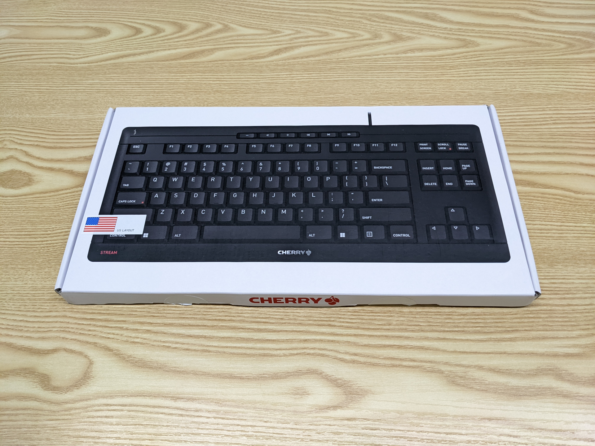
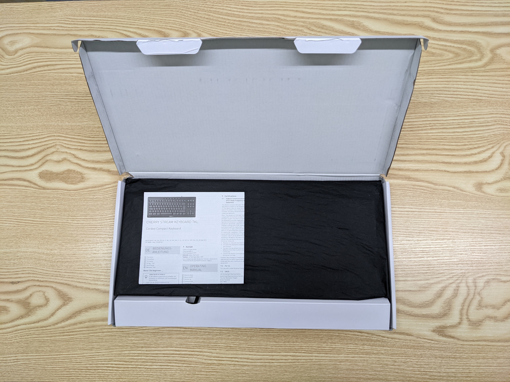
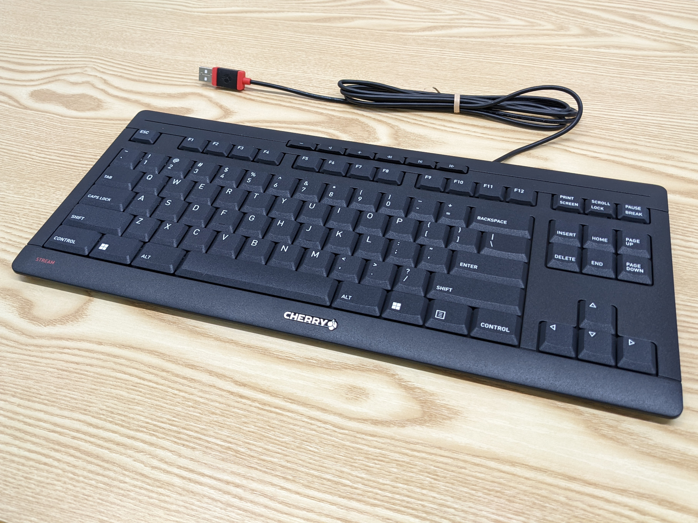
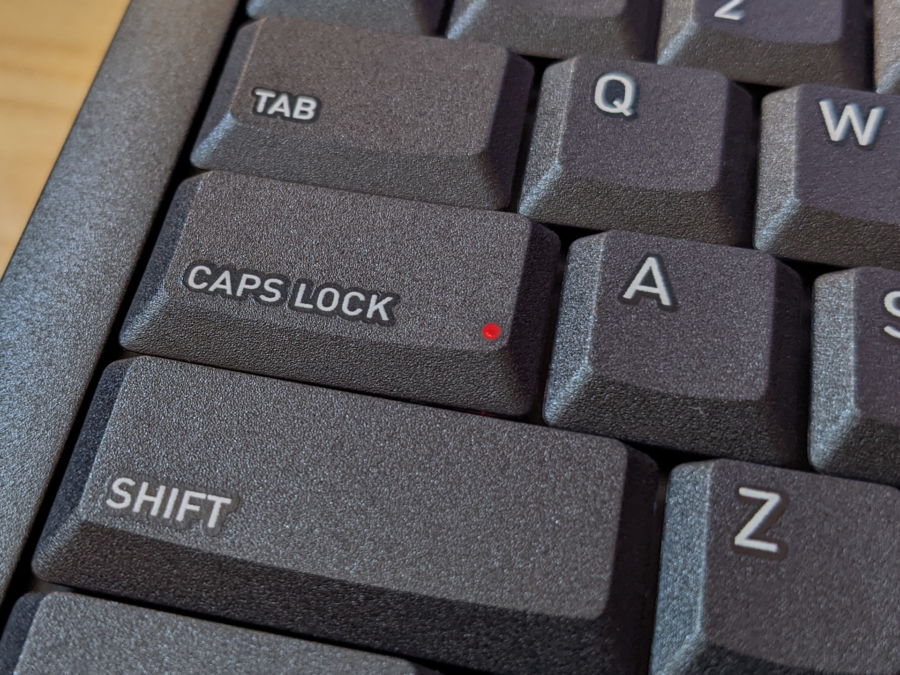
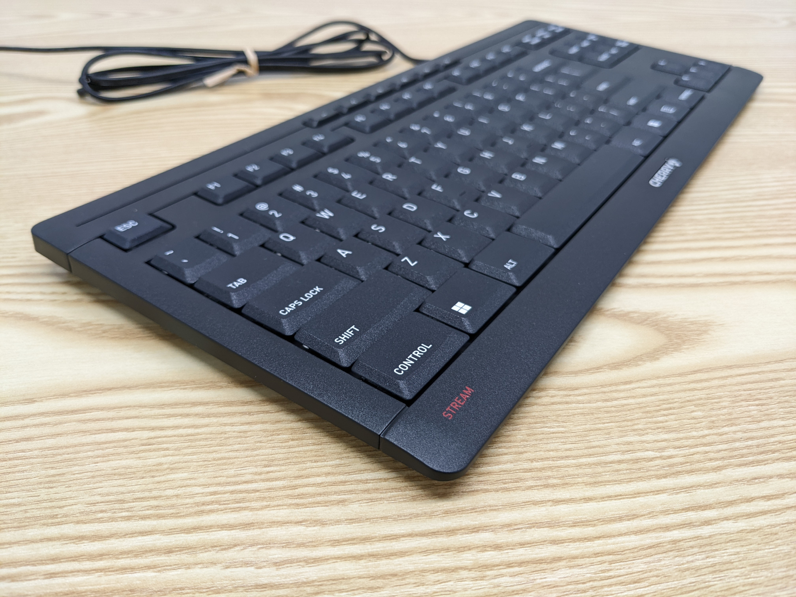
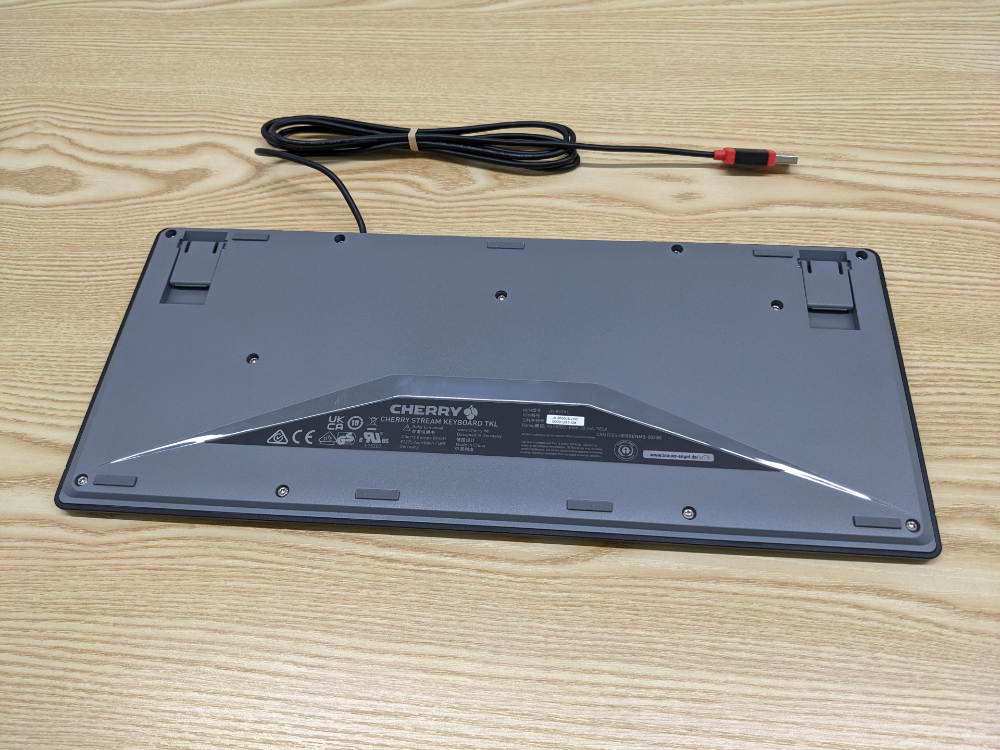
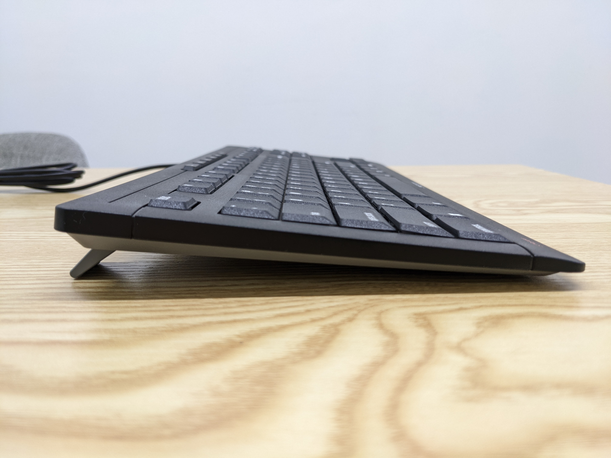
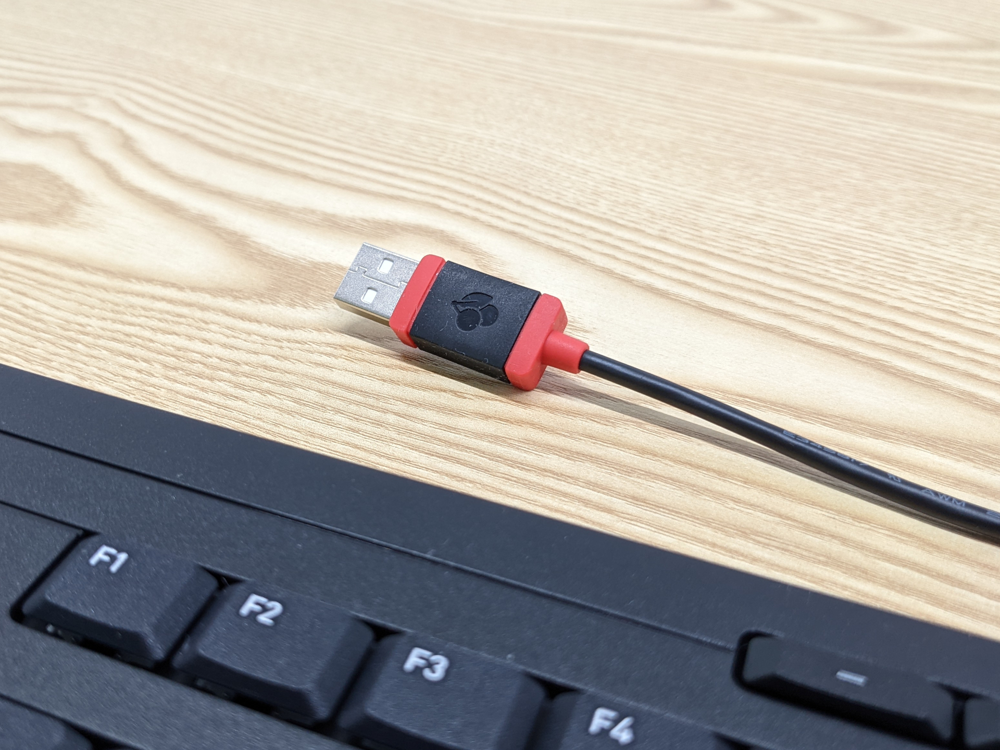
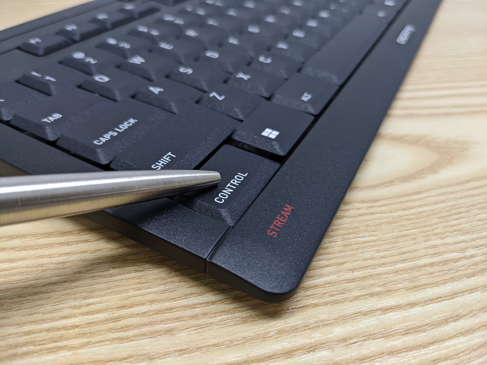

[리뷰] 압도적인 가성비의 고품질 사무용 텐키리스 키보드 - Cherry Stream TKL

저는 기계식 키보드의 다양하고 맛깔나는 키감을 좋아합니다. 하지만 키 입력과 촉감의 한끗 차이가 중요한 게임은 거의 하지 않고, 주로 사무용으로 장시간 타이핑을 하다 보니 멤브레인 키보드를 주력으로 사용합니다. 구조가 단순해서 내구성이 좋고, 저렴한데다, 키압도 높지 않고 소음도 적어서 편하게 막 굴리기 좋습니다. 그리고 어차피 작업을 집중해서 할 때는 키감에 신경이 쓰이지가 않더라고요. 멤브레인 키보드로는 집에서 엔터키와 스페이스바를 마구 내려치는 신나는 타이핑이 가능하다는 장점도 있습니다.
보급형 멤브레인 키보드의 경우 시판되는 대다수의 제품들이 full 배열, 즉 우측에 숫자 키패드(numpad)가 함께 있는 제품인데요, 풀 배열 키보드는 문자를 입력할 땐 상체 균형이 왼쪽으로 쏠렸다가, 마우스를 사용하기 위해서는 오른쪽 어깨로 힘이 실리고, 이런 불균형이 반복되면서 상체에 피로가 누적되다보니 개인적으로 풀 배열 키보드로 장시간 작업을 하기 어렵더군요. 저는 숫자를 반복적으로 빠르고 정확하게 입력해야 하는 엑셀같은 작업을 할 일이 적어서 넘패드를 거의 사용하지 않습니다. 그래서 작업시 양 어깨와 팔의 균형이 최대한 중심으로 모아지는 텐키리스 배열을 선호하고 또 필요로 합니다. 하지만 사무용 표준인 풀 배열 레이아웃으로 대량 생산해 저렴하게 판매되는 멤브레인 키보드의 특성상, 안타깝게도 시중에서 텐키리스 배열의 사무용 멤브레인 키보드를 구하기는 정말 어렵습니다.
그나마 국내에서 구할 수 있는 몇 안되는 텐키리스 멤브레인 키보드 중 하나인 앱코(ABKO)의 K150를 구매해서 사용한 적이 있습니다. 이 키보드는 반발력이 있는 것도 아니고 없는 것도 아닌 애매하고 빈약한 키감을 가지고 있는데, 키를 누르면 물렁하게 들어가다가보니 슬라이더가 키캡을 때리면서 손끝에 충격이 전달되더라고요. PgUp/PgDn/Home/End 키 부분도 표준 레이아웃이 아니어서 불편했습니다. 결정적으로 노트북에 연결해서 사용할 경우 간헐적으로 USB 인식이 끊기거나 심지어 부팅할 때부터 아예 인식을 못하기도 하는 치명적인 증상이 있었어요. 앱코의 다른 기계식 키보드에서도 종종 발생하는 증상이라는데, 전압이라던가 키보드 내부 콘트롤러 관련 문제로 추정된다고 합니다. 전력 공급이 강력하고 충분한 데스크탑에서는 그나마 멀쩡히 작동되길래 어쩔 수 없이 데스크탑에 물려놨습니다.
텐키리스 키보드가 반드시 멤브레인 방식이어야 할 필요는 없고, 그렇다면 이른바 펜터그래프(pantograph)라고도 불리는 시저스위치(scissor-switch) 방식의 키보드는 어떨까 해서 알아봤습니다. 사무용 텐키리스 시저스위치 키보드 중에서 유명한 제품이 하나 있죠. 바로 구 IBM, 현 레노보의 울트라나브(UltraNav) 키보드 입니다. 업무용 노트북의 최강자 씽크패드의 키보드를 그대로 본뜬 외장형 키보드라서 평소에도 눈독을 들였지만, 보급형 유선 제품의 경우 MicroUSB 단자의 내구성이 처참하다는 리뷰를 보고 구매할 생각을 접었습니다. 여러가지로 개선된 무선 겸용 신제품도 있지만 무선 기능이 필요하지도 않은데다가 막 굴릴 키보드에 10만원 넘게 들이기엔 아까웠습니다.
그렇게 고민과 검색을 반복하다가 마침내 기계식 키보드의 스위치 제조사로 유명한 독일 Cherry사에서 자체적으로 만드는 키보드 중 시저스위치 방식의 유선 텐키리스 키보드가 있다는 정보를 알게 되었습니다. 체리 스트림(Cherry Stream) TKL 이라는 제품인데요, 독자적인 시저스위치 구조물인 Cherry SX 스위치를 사용합니다. 여러가지로 괜찮아보이길래 한번 사용해보기로 했습니다. 아쉽게도 국내에서는 정식 발매되지 않은 제품이라서 해외직구를 통해 구매했습니다.
제품에 관한 상세 설명은 공식 웹사이트에서 확인하세요.
패키지 & 구성품


박스는 평범한 카드보드 재질으로 전면에는 키보드 사진이 인쇄되어 있습니다. 일자형 엔터키를 가진 미국식 레이아웃 제품임을 나타내는 스티커가 붙어있네요. 박스를 열어보면 제품 설명서와 함께 검은색 종이 포장지에 싸여있는 키보드가 나타납니다. 플라스틱을 사용하지 않은 포장으로 독일의 Blue Angel 친환경 인증을 받았다고 하는데, 박스가 그다지 단단하지 않고 내부에 완충재도 전혀 없습니다. 일부 업체에서 직배송으로 주문시 별도의 외부 박스 포장 없이 제품 박스에 비닐만 씌워서 발송하는 경우가 있어서 파손이 우려되는 부분입니다.
외관

키보드는 이렇게 생겼습니다. 자글자글 미세한 샌드페이퍼 패턴으로 무광 처리를 한 플라스틱 재질입니다. 손가락이 쉽게 미끄러지지 않는 살짝 거칠거칠한 마찰력 있는 촉감이라서 좋고, 블랙 색상이지만 빛을 받으면 보는 각도에 따라 은은한 광택이 돌아 챠콜 색상처럼 보이는 점도 만족스럽습니다. 키캡의 형태는 노트북의 시저스위치 키보드에서 많이들 사용하는 개별 분리형 치클릿(chiclet) 방식은 아니고 마름모꼴로 솟아있는 키캡들이 연속적으로 붙어있는 전통적인 노트북 키보드 형태입니다. 좋게 말하면 클래식하고, 나쁘게 말하면 구형 디자인입니다. 누가 봐도 "사무용 키보드네" 싶은 디자인입니다. 키보드 하우징도 뒤틀림이나 통울림 없게끔 단단하게 잘 만들어져 있습니다.
레이아웃은 보시다시피 평범합니다. 미국 시장에 출시된 제품이라 한글 각인은 당연히 되어있지 않지만 한영키는 우측 ALT키로 동작합니다. 상단에는 볼륨 및 미디어 플레이백을 제어하는 멀티미디어 키들이 나열되어 있는데 여기에는 Cherry SX 시저스위치 메커니즘이 적용되어 있지 않습니다. 그렇다고 일반적인 멤브레인 방식인 것도 아니고, 물렁물렁한 러버돔을 바로 누르듯이 구분감이 전혀 없는 키감입니다. 멀티미디어 조작에는 키감이 그다지 중요하지 않으니까 사용하는데 문제는 없습니다.

Caps Lock 키와 Scroll Lock 키에는 상태를 표시해주는 붉은색 LED 인디케이터가 내장되어 있습니다.

하단 베젤에는 중앙에 체리사의 로고가 금속 플레이트로 부착되어 있고, 좌측에는 STREAM이라는 문구가 인쇄되어 있습니다.

키보드 바닥에는 밀림 방지 고무 패드가 붙어있고 키보드 각도 상승을 위한 접이식 키보드 다리가 2개가 장착되어 있습니다. 키보드 다리는 견고합니다. 힘을 줘서 완전히 젖히면 딸깍 소리와 함께 단단하게 고정됩니다. 다만 여러 단계로 조절이 되는 것은 아니고 단일 각도로 접었다 펴집니다.

키보드 다리를 펼치면 키보드가 적절한 각도로 틸팅됩니다. 보시다시피 키보드가 상당히 얇아서 손목에 무리가 가지 않습니다.

USB 케이블에는 붉은색 장식과 함께 체리사의 로고가 각인되어 있습니다. 귀엽네요.
키감

키감은 시저스위치 방식의 키보드 중에서도 상당히 좋습니다. 구분감이 명확하고 러버돔 반발력도 좋습니다. 쫀득쫀득 합니다. 비교적 품질이 저하된 요즘 레노버 씽크패드 노트북이 아닌, 과거 IBM 시절 씽크패드 노트북의 뛰어난 키감과 유사하다는 평가가 있네요. 시저스위치 방식이라 소음이 적고 키압도 낮다 보니 장시간 타이핑에도 굉장히 편안합니다. 사무용 키보드라는 본질에 충실한 키감으로 매우 마음에 듭니다.
약간의 단점...
키캡 사이사이를 가로지르는 베젤이 있어서 먼지가 유입될 가능성이 비교적 낮은 치클릿 타입의 키보드에 비해서, 키캡 간격이 개방되어 있다보니 아무래도 먼지가 잘 들어가는 편입니다. 청소를 위해 물티슈 등으로 표면을 닦아낼때는 키캡 모서리에 섬유가 걸리기도 합니다.
그리고 빠르게 타이핑을 하다보면 키를 누르는 각도에 따라서 시저스위치의 플라스틱 구조물이 마찰되며 삐걱거리는 소리가 날 때가 있습니다.
강력 추천!
이렇게나 좋은 품질의 사무용 키보드인데, 가격마저 저렴합니다. 정가는 29.99 미국 달러지만 할인된 가격으로 판매하는 판매점들이 여럿 있습니다.
화려하지는 않지만 본질에 충실한 실용적인 디자인. 타이핑하기에 편안하고 조용하면서도 누르는 맛이 좋은 쫀득한 키감. 넉넉한 베젤과 여유있는 키 피치. 풀배열 키보드에서 넘패드만 없어진 표준 텐키리스 레이아웃. 손목 부담을 줄여주는 슬림한 low-profile 폼팩터. 편리한 멀티미디어 키는 덤. 5만원 미만으로 구할 수 있는 최고의 사무용 텐키리스 키보드입니다. 구입을 망설일 이유가 없을 정도네요.